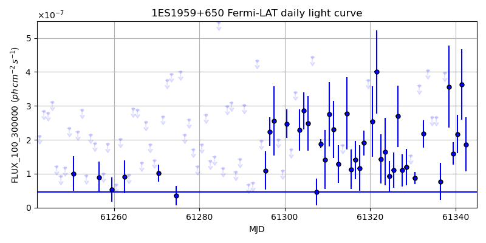
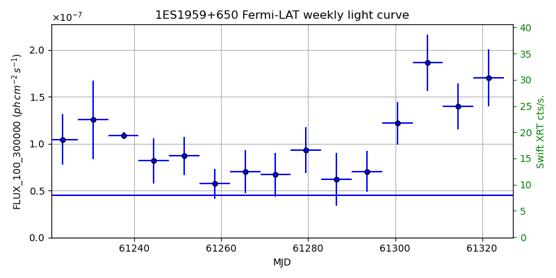
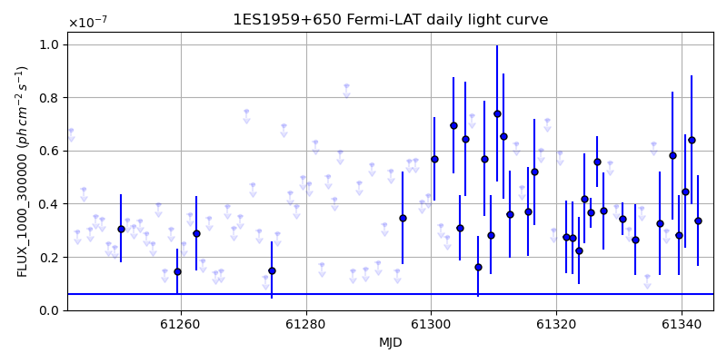
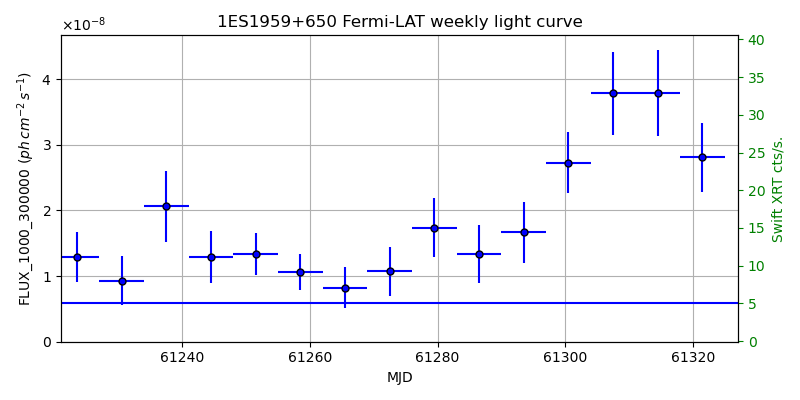

LAT Lightcurve site: https://fermi.gsfc.nasa.gov/ssc/data/access/lat/msl_lc/source/1ES_1959p650
Swift site: https://www.swift.psu.edu/monitoring/source.php?source=1ES1959+650
NED: Query
Time of last update of this page: UT: 2026-10-17 15:26 (MJD: 61330.644)
| Property | Value |
|---|---|
| R.A. | 20:00:00.00 |
| Dec. | 65:08:56.4 |
| z | 0.047 |
| 3FGL SpectrumType | PowerLaw |
| 3FGL PL Index | 1.88 |
| 3FGL Flux_100_300000 | 4.53e-08 1 / (s cm2) |
| 3FGL Flux_1000_300000 | 5.90e-09 1 / (s cm2) |
| 3FGL Flux >200 GeV | 5.42e-11 1 / (s cm2) |
| 3FGL Extrap. Crab >200 GeV | 0.23 |
| 3FGL Flux After EBL Absorption >200GeV | 4.19e-11 1 / (s cm2) |
| 3FGL EBL Crab Fraction >200GeV | 0.18 |

| MJD | dMJD | Flux | dFlux | Frac3FGL | FracCrab>200GeV | EBLFracCrab>200GeV |
|---|---|---|---|---|---|---|
| 61325.50 | 0.50 | 1.11e-07 | 5.12e-08 | 2.44 | 0.57 | 0.44 |
| 61326.50 | 0.50 | 2.69e-07 | 9.11e-08 | 5.94 | 1.38 | 1.07 |
| 61327.50 | 0.50 | 1.10e-07 | 4.82e-08 | 2.42 | 0.56 | 0.43 |
| 61328.50 | 0.50 | 1.20e-07 | 5.46e-08 | 2.64 | 0.61 | 0.47 |
| 61329.50 | 0.50 | 1.53e-07 | 0.00e+00 | 0.00 | 0.00 | 0.00 |

| MJD | dMJD | Flux | dFlux | Frac3FGL | FracCrab>200GeV | EBLFracCrab>200GeV |
|---|---|---|---|---|---|---|
| 61293.50 | 3.50 | 7.05e-08 | 2.20e-08 | 1.55 | 0.36 | 0.28 |
| 61300.50 | 3.50 | 1.22e-07 | 2.25e-08 | 2.69 | 0.62 | 0.48 |
| 61307.50 | 3.50 | 1.86e-07 | 3.01e-08 | 4.11 | 0.95 | 0.73 |
| 61314.50 | 3.50 | 1.40e-07 | 2.48e-08 | 3.08 | 0.72 | 0.56 |
| 61321.50 | 3.50 | 1.70e-07 | 3.03e-08 | 3.76 | 0.87 | 0.67 |

| MJD | dMJD | Flux | dFlux | Frac3FGL | FracCrab>200GeV | EBLFracCrab>200GeV |
|---|---|---|---|---|---|---|
| 61325.50 | 0.50 | 3.66e-08 | 5.79e-09 | 6.21 | 1.44 | 1.11 |
| 61326.50 | 0.50 | 5.59e-08 | 9.65e-09 | 9.47 | 2.20 | 1.70 |
| 61327.50 | 0.50 | 3.73e-08 | 1.46e-08 | 6.33 | 1.47 | 1.14 |
| 61328.50 | 0.50 | 5.56e-08 | 0.00e+00 | 0.00 | 0.00 | 0.00 |
| 61329.50 | 0.50 | 3.91e-08 | 0.00e+00 | 0.00 | 0.00 | 0.00 |

| MJD | dMJD | Flux | dFlux | Frac3FGL | FracCrab>200GeV | EBLFracCrab>200GeV |
|---|---|---|---|---|---|---|
| 61293.50 | 3.50 | 1.67e-08 | 4.64e-09 | 2.83 | 0.66 | 0.51 |
| 61300.50 | 3.50 | 2.73e-08 | 4.72e-09 | 4.63 | 1.07 | 0.83 |
| 61307.50 | 3.50 | 3.78e-08 | 6.28e-09 | 6.42 | 1.49 | 1.15 |
| 61314.50 | 3.50 | 3.79e-08 | 6.53e-09 | 6.43 | 1.49 | 1.15 |
| 61321.50 | 3.50 | 2.81e-08 | 5.33e-09 | 4.76 | 1.10 | 0.85 |
--------------------------------------------------------- Using user-supplied coords: 20:00:00.00 65:08:56.4 2000 --------------------------------------------------------- FLWO UT night of: 2026-10-18 Local Sid. @ Midnight: 01:23 Sunset (-15.0) (local, UT): 18:56 01:56 Sunrise (-15.0) (local, UT): 05:22 12:22 Moonrise (local, UT): Moonset (local, UT): 22:59 05:59 Moon phase: 0.47 --------------------------------------------------------- AzTime LSID UT Obj_el Obj_az Mn_el Mn_az Sep. --------------------------------------------------------- 18:56 20:18 01:56 56.3 356.5 30.5 195.3 91.7 19:26 20:48 02:26 55.6 351.0 28.5 202.5 91.7 19:56 21:18 02:56 54.4 346.0 25.9 209.3 91.6 20:26 21:48 03:26 52.6 341.6 22.6 215.6 91.5 20:56 22:19 03:56 50.4 338.0 18.8 221.3 91.4 21:26 22:49 04:26 47.8 335.2 14.5 226.6 91.3 21:56 23:19 04:56 45.0 333.1 9.9 231.4 91.2 22:26 23:49 05:26 42.1 331.7 5.0 235.7 91.1 22:56 00:19 05:56 39.0 330.8 0.2 239.8 91.0 23:26 00:49 06:26 35.8 330.5 -5.5 243.5 90.9 23:56 01:19 06:56 32.7 330.7 -11.3 247.0 90.8 00:26 01:49 07:26 29.6 331.2 -17.0 250.4 90.7 00:56 02:19 07:56 26.6 332.2 -22.8 253.6 90.6 01:26 02:49 08:26 23.6 333.5 -28.7 256.7 90.5 01:56 03:19 08:56 20.9 335.1 -34.7 259.8 90.3 02:26 03:49 09:26 18.3 337.0 -40.7 263.0 90.2 02:56 04:20 09:56 15.9 339.1 -46.8 266.4 90.1 03:26 04:50 10:26 13.7 341.5 -52.8 270.1 90.0 03:56 05:20 10:56 11.8 344.0 -58.9 274.3 89.9 04:26 05:50 11:26 10.2 346.8 -64.9 279.6 89.9 04:56 06:20 11:56 8.9 349.7 -70.8 287.0 89.8 05:22 06:46 12:22 8.1 352.3 -75.7 297.1 89.7 --------------------------------------------------------- Dark hours >55 deg.: 0.00